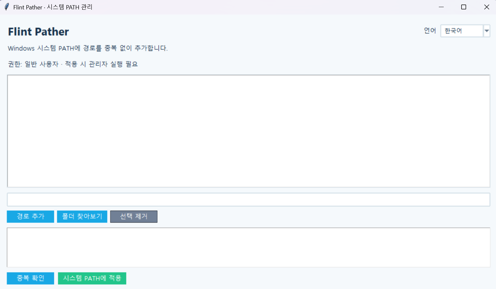

플린트 경로 관리자
버전: 1.0.0
Flint Pather
Windows 시스템 PATH에 프로그램 폴더를 중복 없이 추가하는 GUI 도구입니다. 전체 경로를 입력하지 않고 터미널에서 유틸리티를 실행할 수 있도록 도와줍니다.
사용 방법
- 프로그램을 실행하고 현재 등록 후보 경로를 확인합니다.
경로 추가입력란에 폴더 경로를 입력하거나폴더 찾아보기로 선택합니다.- 필요 없는 후보 경로는 목록에서 선택해 제거합니다.
중복 확인을 눌러 이미 등록된 경로와 새로 추가할 경로를 확인합니다.- 관리자 권한으로 실행한 상태에서
시스템 PATH에 적용을 눌러 추가합니다.
시스템 PATH를 변경하려면 Windows 관리자 권한이 필요합니다. 목록에서 경로를 제거해도 이미 등록된 시스템 PATH 항목은 삭제되지 않습니다.
주요 기능
- 경로 직접 입력 및 폴더 선택
- 등록 후보 경로 추가·제거 및
%APPDATA%에 목록 자동 저장·복원 - 경로 정규화를 이용한 중복 검사
- 기존 시스템 PATH를 유지하면서 새로운 경로만 추가
- 적용 전 등록 여부 및 추가 예정 경로 확인
- 관리자 권한 확인 및 적용 결과 표시
- 한국어 / 영어 UI 및 창 크기·위치 복원
실행
관리자 권한의 터미널에서 실행합니다.
python pather.py등록 후보 경로는 %APPDATA%\Flint\Toolbox\Pather\config\paths.json에 자동 저장되며, 다음 실행 시 불러옵니다. 최초 실행 시 목록은 비어 있습니다. 후보 목록을 수정해도 시스템 PATH는 자동으로 변경되지 않으며, 시스템 PATH에 적용을 눌러야 반영됩니다. PATH 변경 후에는 새 터미널을 열어야 변경된 환경 변수가 반영됩니다.
수동 등록
Win + R을 누르고sysdm.cpl을 입력합니다.고급 → 환경 변수로 이동합니다.- 시스템 변수의
Path를 편집합니다. - 필요한 프로그램 폴더 경로를 추가합니다.
- 새 터미널을 열어 적용 여부를 확인합니다.